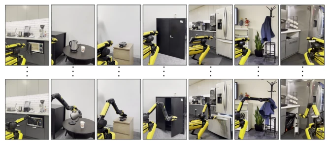
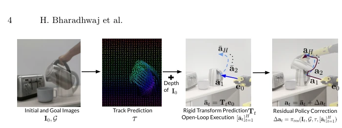
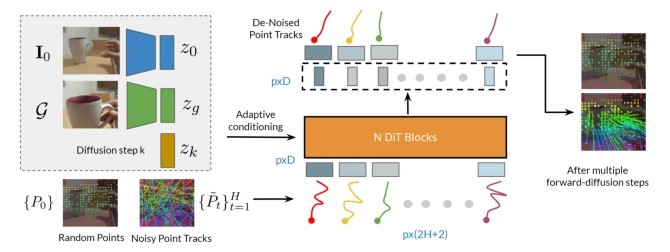
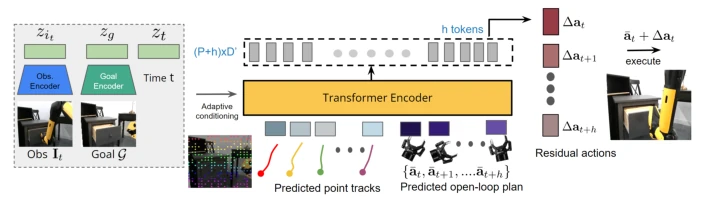
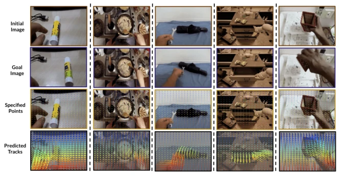
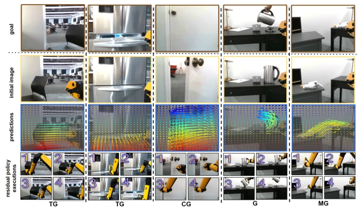
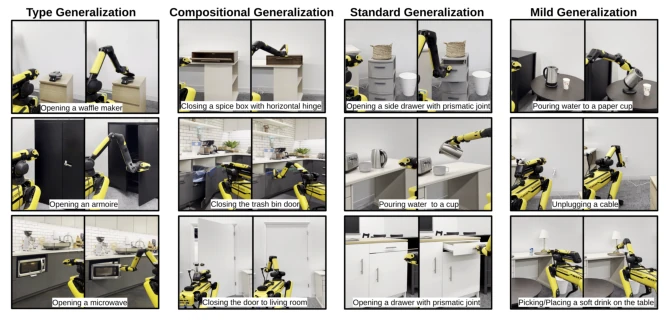
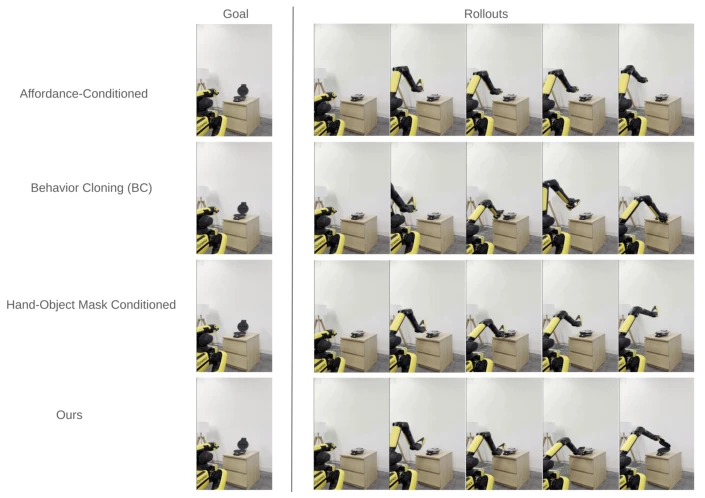
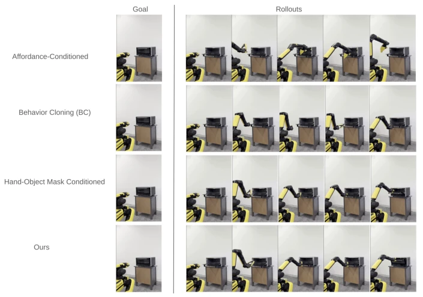
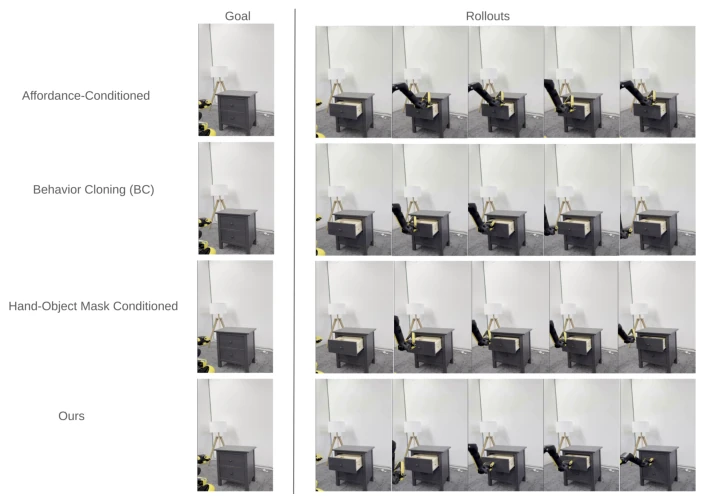

互联网视频是新的石油，但机器人胃口挑剔。Track2Act 不直接学动作，而是学“点轨迹”，再转成 3D 刚体变换，最后用少量机器人数据微调。优点是泛化性强，能处理未见过的物体和场景；缺点是仍依赖约 400 条机器人演示数据，并非完全零样本，且任务多为短视距单物体操作。相比直接生成视频 [14] 或预测掩码 [4]，点轨迹更精准且计算更便宜，但把 2D 轨迹转 3D 动作的过程仍可能引入误差，需要闭环策略兜底。整体思路巧妙，但落地仍有门槛。
Internet video is the new oil, but robots are picky. Track2Act does not learn actions directly, but learns "point trajectories", then converts them into 3D rigid body transforms, and finally fine-tunes with a small amount of robot data. The advantage is strong generalization, capable of handling unseen objects and scenes; the disadvantage is still relying on approximately 400 robot demonstration data, not completely zero-shot, and tasks are mostly short-horizon single-object operations. Compared to directly generating video [14] or predicting masks [4], point trajectories are more accurate and computationally cheaper, but the process of converting 2D trajectories to 3D actions may still introduce errors, requiring closed-loop strategies as a safeguard. The overall idea is clever, but there are still barriers to deployment.
The core pain points of embodied intelligence are generalization and data cost. Existing methods rely on large-scale robot demonstration data [5, 8, 28, 73], which is difficult to collect and scene-limited, making it hard to cope with unseen objects. Test-time training [2, 40] can utilize human video, but requires human demonstration first before robot learning, making deployment inconvenient and time-consuming. This paper aims to solve the direct deployment problem, utilizing massive internet video to learn interaction plans, avoiding test-time adaptation. Existing methods utilizing non-robot data [3, 4] mostly rely on static affordance or masks, lacking precise reasoning on object state changes, making it hard to cope with complex scenes and unable to directly generate executable actions. Therefore, a solution that can utilize web video and is directly deployable is needed.

Fig. 1: Glimpse of some of the diverse robot manipulation capabilities across physical office and kitchen scenes enabled by our framework. We learn to predict point tracks from web videos for learning interaction plans that can be used for inferring robot actions in unseen scenarios. This enables a common goal-conditioned policy to perform everyday tasks like closing microwaves, pulling out drawers, flipping open toasters, pouring from jars etc. Columns show first and last images of rollouts from our policy.
The framework is divided into three stages: 1. Trajectory Prediction: DiT-based diffusion model, input initial/goal images and random points, train 2D point trajectory predictor from web videos (EpicKitchens, RT1, BridgeData). The DiT model is conditioned on initial and goal image embeddings and diffusion steps, input is token sequence of tracked points, no assumption of specific object or camera motion, strong generalization. 2. Rigid Body Transform Inference: Combined with depth maps, through optimization algorithm map 2D trajectories to object 3D rigid body transform sequences, generating open-loop actions. This step solves object motion, no robot data needed. 3. Residual Policy: Utilize few robot demonstrations (~400 trajectories) to train closed-loop residual policy, correct open-loop plan errors. Innovation lies in using point trajectories to replace masks [4] or video generation [14], both retaining motion correspondence and reducing computational complexity, achieving embodiment-agnostic interaction plans, finally compensating open-loop errors through closed-loop policy to ensure execution stability.

Fig. 2: Illustration of the pipeline for learning track prediction from web video datasets, inferring rigid transforms of objects based on the predicted tracks in a robot’s envi- ronment, and fine-tuning with a residual policy learned with limited robot data. This approach allows us to learn a single goal-conditioned policy for diverse (unseen) tasks.

Fig. 3: Architecture of the Diffusion Transformer Vθ for denoising track predictions given initial image I0, goal G, and an initial set of p points P0.

Fig. 4: Architecture of the residual policy that predicts corrections at each time-step over the predicted open-loop plan, and enables closed-loop deployment.
Tested using Spot robot in real kitchen/office scenes. Dataset includes EpicKitchens, RT1, BridgeData. Baselines include BC [5, 8], Affordance-BC [3], Video-BC [14, 17], Mask-BC [4]. Metrics are success rates at different generalization levels (MG, G, CG, TG). Results show Ours is significantly better than baselines in Combined Generalization (CG) and Type Generalization (TG) (e.g., TG reaches 40% vs 0-5%). Ablation shows residual policy is crucial for correcting open-loop errors, but high generalization level success rates are still limited by grasp and trajectory feasibility. Compared to pure open-loop, closed-loop policy improved stability, proving the effectiveness of few-shot fine-tuning.

Fig. 5: We show qualitative results of the track predictions on unseen initial and goal images across diverse datasets. Given specified points on the initial image we predict future tracks of these points, corresponding to the goal image. We can see that the predictions are plausible and correspond to manipulating the object(s) in the scene.

Fig. 6: We show visualizations of point track predictions for different tasks, followed by closed-loop execution with the residual policy. We can see that the predictions are plausible and the robot execution successfully realizes the predictions to complete the respective tasks specified by the goal images. The bottom row shows the generalization level for each task, defined in section 4.1.

Fig. 7: Qualitative results showing robot executions (from a third person view) with the residual policy for different tasks with respect to the generalization levels defined in section 4.1. We show the first and last images of a rollout. The robot executions are best viewed as videos in the supplementary zip.

Fig. 8: Type Generalization (TG). We show rollouts from baselines for the same goal. The views are from a third person camera.

Fig. 9: Compositional Generalization (CG). We show rollouts from baselines for the same goal. The views are from a third person camera.

Fig. 10: Standard Generalization (G). We show rollouts from baselines for the same goal. The views are from a third person camera.